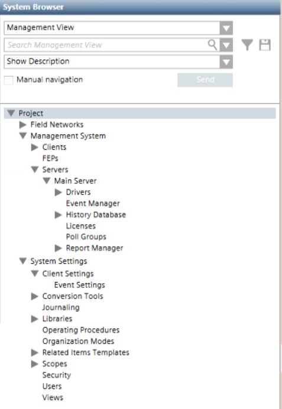

Management View
The Management View is predefined and includes all the objects pertaining to its overall management such as: representation of the field site, the computer networking, and other site project settings. Basically, it provides a depiction centered on the site installation and allows navigation through the hierarchical structure of the project tree. Authorized technicians typically use this view to set up the site project.
Management View | Levels |
|---|---|
 | The Project root includes the following levels:
|
The Management View comes with installation and does not require any changes. If desired, you can customize it to a limited extent, by changing the Description of nodes in the System Browser tree. If desired, you can also associate a graphic with the root node of the view.